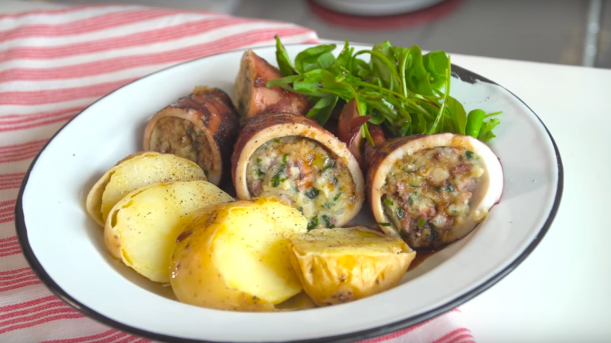

Calamares Rellenos

Ingredientes
- 2 tubos de calamar con sus tentáculos.
- 2 cebollas.
- 2 dientes de ajo.
- Un litro de agua.
- Pimienta en grano, c/n.
Para el relleno
- 2 tentáculos de calamar.
- Una cebolla.
- Un diente de ajo.
- Una taza de perejil.
- Una taza de panko.
- Aceite de oliva, c/n.
- Pimienta, c/n.
- Sal, c/n.
Para la guarnición
- Una papa.
- Rúcula, c/n.
- Salsa de soja, c/n.
Procedimiento
- Hervir un litro de agua en una olla y agregarle la pimienta, 2 dientes de ajo aplastados, 2 cebollas y
los tentáculos de calamar.
- Cocinar por 30 minutos, retirar los tentáculos y picarlos.
Para el relleno
- En una sartén, saltear un ajo rallado con aceite de oliva y una cebolla picada. Agregarle sal y
pimienta.
- Añadir los tentáculos picados, una taza de perejil picado y el panko.
- Echar una taza del jugo de la cocción de los tentáculos.
- Secar los tubos de calamar y rellenarlos con la preparación anterior. Cerrarlos con escarbadientes.
- Colocar aceite de oliva en una cacerola y dorar los calamares vuelta y vuelta.
- Agregar una taza de jugo de cocción y tapar.
- Cortar el calamar a la mitad y servirlo con una papa hervida de guarnición.
- Decorar el plato con un poco de rúcula y salsear con un chorrito de aceite de oliva y reducción de salsa
de soja.